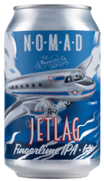

Jetlag Fingerlime IPA
Nomad Brewing Co.
Brookvale, New South Wales
375mL can
6% Alc/Vol
2019 edition Brewed with a combination of pale and ale malts, with the addition of caramel malts and tonnes of American and Aussie hops, including Mosaic and Galaxy. Combine this with the unique Australian native Finger Lime to deliver a fantastic citrusy Zing. A tropical fruit IPA. Like an English style IPA, expect a balance between malt sweetness and hop bitterness.
While it still drinks like a punchy West Coast IPA, Jetlag reveal hints of its bush tucker, with the finger limes adding a potent limey flourish to the citrus rind and piney hops at play. There's a depth to the malt character, a slight earthiness and a stoic bitterness that's eager to set up residency for a while.
A long time ago in a country far, far away (Italy) a love affair blossomed. It was a relationship between Global Top 100 brewer, Leonardo Di Vincenzo and Kerrie & Johnny Latta, a husband and wife team from the Northern Beaches, owners of Australia's largest craft beer distributors, Experience IT beverages.
After endless travel, negotiation and plenty of beers, the guys managed to persuade Brooks Carretta, Leonardo's brewing protege at Birra Del Borgo to pull up stumps and make the journey down under to Brookvale. He had two conditions: To never be restricted by fashions and trends and to use Australia's amazing native ingredients.